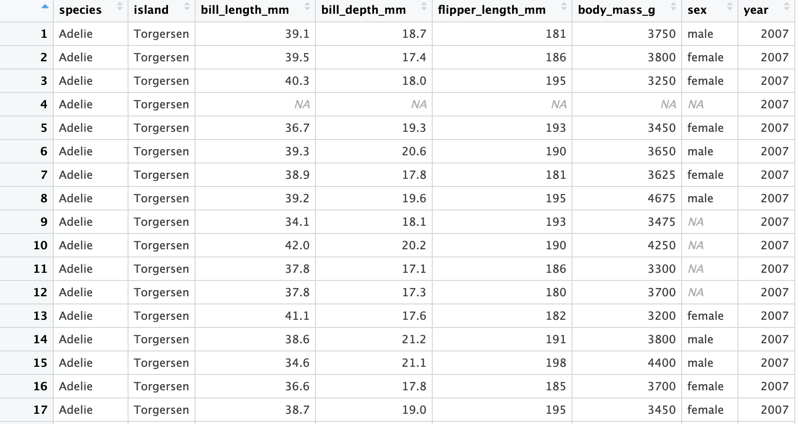
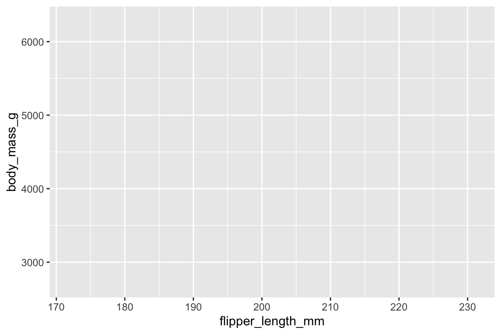
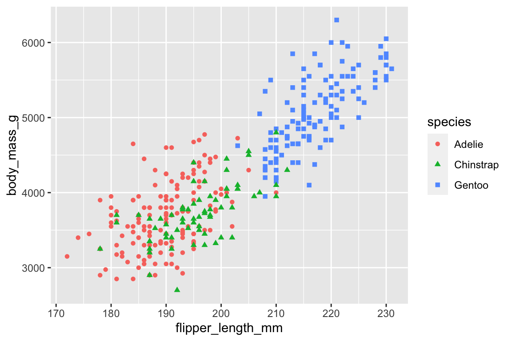
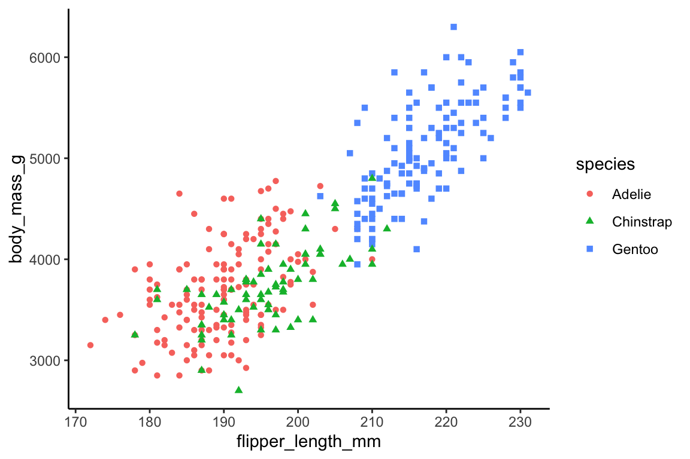
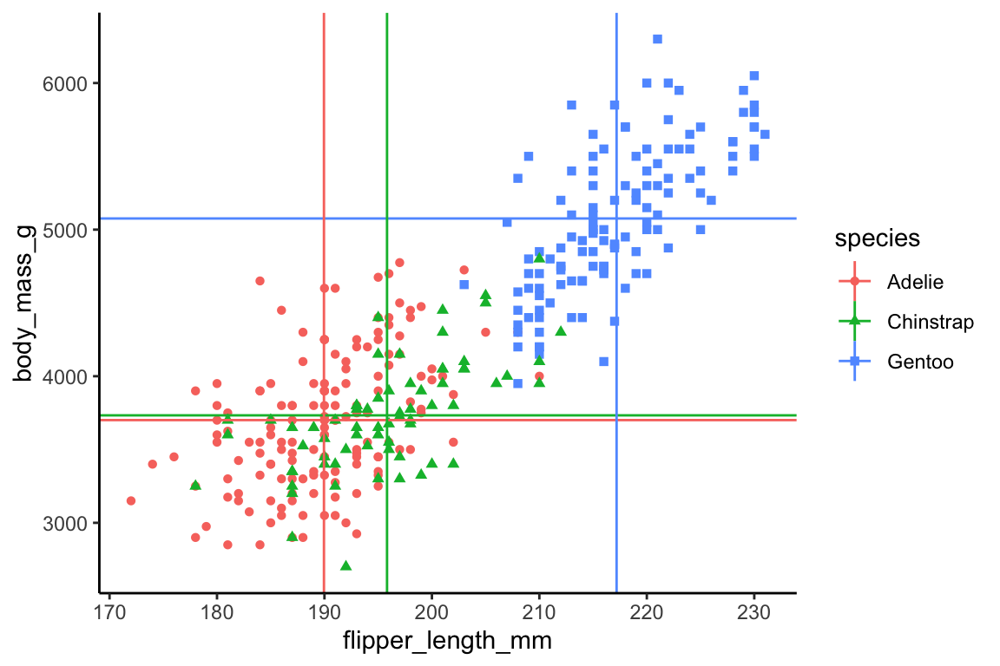

1 + 2
3 * 9An Introduction to Working with Data in R
Class 1
Prepare
Before starting this class:
📖 Read the Prerequisites page
Outline
R Basics
Data Frames
Brief intro to
Data transformation
Graphical visualization
Statistical analysis
R Basics
Script Files
To create a new R script go to
File -> New File -> R Script
This course will refer to two types of R script files:
Reproducible script file: Script file for actually processing and analyzing your data. Can reproduce your steps of processing and analysis.
This is the file you actually save to process your data
Is commented and polished enough to share with others.
Scratchpad script file: A script file for testing, debugging, and exploring your data.
- Often saved as Untitled.R or not saved at all
- Alternatively, you can just execute code directly in the console
Running R Code
Two ways of executing R code
- Typing code in an R script file and executing R code line-by-line
Ctrl + Enter. - Typing code directly in the console window
Creating R Objects
Objects are created using the assignment operator,
<-.object <- functions or values.
Go ahead and type the following two lines of code in your scratchpad script file/console and execute the lines of code.
my_first_object <- "hello"
my_second_object <- c(5,6,7,8)
You should now see
my_first_objectandmy_second_objectin your Environment windowNote that R is case sensitive
Using Functions
Anything you do in R is by using functions
Learning R is learning what functions are available and how to use them.
Example: there is a function to create a sequence of numbers,
seq().
seq(1, 100, by = 10)
. . .
Functions take arguments
If you don’t label argument names, then the order of arguments matters!
seq(from = 1, to = 100, by = 10)
seq(to = 100, by = 10, from = 1)
seq(1, 100, 10)Helper Function
?function_name()
You should make frequent use of the helper function
?- e.g.,
?seq()
- e.g.,
The names of arguments
What the arguments do
Argument default values
You don’t have to and you almost never will specify all the possible arguments.
In some cases it might be important to know what the default value of an argument is.
R Packages
Functions are organized in R packages
R comes with a set of R packages and functions
Developers and other researchers have created a lot of R packages specifically for use in psychology research
Most R packages are hosted on The Comprehensive R Archive Network - CRAN.
- Others may be hosted on GitHub
Install and Load Packages
To install packages from CRAN is easy
install.packages("dplyr")
Installing the package installs it on your computer
When you want to use the functions in the package you need to load the package into your current environment
. . .
library(dplyr)Data Frames
Example Data Set
We will use a data set from the palmerpenguins package

Data Frames
Let’s create a new script - a reproducible script to use for this class
You should always load packages at the top of the script
# load packages
library(palmerpenguins)
library(dplyr)
##
## Attaching package: 'dplyr'
## The following objects are masked from 'package:stats':
##
## filter, lag
## The following objects are masked from 'package:base':
##
## intersect, setdiff, setequal, union
library(ggplot2)
# import data
data_import <- penguins
Note
Commenting
It is a good idea to comment your code to provide organization and clarity as to what the code is doing
Viewing the Data
In scratchpad script / console
View(data_import)

Viewing the Data
In scratchpad script / console
Get columns names
colnames(data_import)
## [1] "species" "island" "bill_length_mm"
## [4] "bill_depth_mm" "flipper_length_mm" "body_mass_g"
## [7] "sex" "year"
Sneak peak of data
head(data_import)
## # A tibble: 6 × 8
## species island bill_length_mm bill_depth_mm flipper_length_mm body_mass_g
## <fct> <fct> <dbl> <dbl> <int> <int>
## 1 Adelie Torgersen 39.1 18.7 181 3750
## 2 Adelie Torgersen 39.5 17.4 186 3800
## 3 Adelie Torgersen 40.3 18 195 3250
## 4 Adelie Torgersen NA NA NA NA
## 5 Adelie Torgersen 36.7 19.3 193 3450
## 6 Adelie Torgersen 39.3 20.6 190 3650
## # ℹ 2 more variables: sex <fct>, year <int>Viewing the Data
In scratchpad script / console
- Use
$to refer to a column in a data frame
Get unique values in a column
unique(data_import$species)
## [1] Adelie Gentoo Chinstrap
## Levels: Adelie Chinstrap GentooTypes of Values
Classes are types of values that exist in R. Here are a list of some common value types:
character (or non-numeric)
"hello","goodbye"double (or numeric)
2,32.55integer
5,99logical
TRUE,FALSE
Types of Values
In scratchpad script / console
To evaluate the type of values in a column you can use typeof()
typeof(data_import$bill_depth_mm)
## [1] "double"
typeof(data_import$flipper_length_mm)
## [1] "integer"
To change the class of values in an object you can use as.character() , as.numeric() , as.double() , as.integer() , as.logical() functions.
as.character(data_import$bill_depth_mm)
## [1] "18.7" "17.4" "18" NA "19.3" "20.6" "17.8" "19.6" "18.1" "20.2"
## [11] "17.1" "17.3" "17.6" "21.2" "21.1" "17.8" "19" "20.7" "18.4" "21.5"
## [21] "18.3" "18.7" "19.2" "18.1" "17.2" "18.9" "18.6" "17.9" "18.6" "18.9"
## [31] "16.7" "18.1" "17.8" "18.9" "17" "21.1" "20" "18.5" "19.3" "19.1"
## [41] "18" "18.4" "18.5" "19.7" "16.9" "18.8" "19" "18.9" "17.9" "21.2"
## [51] "17.7" "18.9" "17.9" "19.5" "18.1" "18.6" "17.5" "18.8" "16.6" "19.1"
## [61] "16.9" "21.1" "17" "18.2" "17.1" "18" "16.2" "19.1" "16.6" "19.4"
## [71] "19" "18.4" "17.2" "18.9" "17.5" "18.5" "16.8" "19.4" "16.1" "19.1"
## [81] "17.2" "17.6" "18.8" "19.4" "17.8" "20.3" "19.5" "18.6" "19.2" "18.8"
## [91] "18" "18.1" "17.1" "18.1" "17.3" "18.9" "18.6" "18.5" "16.1" "18.5"
## [101] "17.9" "20" "16" "20" "18.6" "18.9" "17.2" "20" "17" "19"
## [111] "16.5" "20.3" "17.7" "19.5" "20.7" "18.3" "17" "20.5" "17" "18.6"
## [121] "17.2" "19.8" "17" "18.5" "15.9" "19" "17.6" "18.3" "17.1" "18"
## [131] "17.9" "19.2" "18.5" "18.5" "17.6" "17.5" "17.5" "20.1" "16.5" "17.9"
## [141] "17.1" "17.2" "15.5" "17" "16.8" "18.7" "18.6" "18.4" "17.8" "18.1"
## [151] "17.1" "18.5" "13.2" "16.3" "14.1" "15.2" "14.5" "13.5" "14.6" "15.3"
## [161] "13.4" "15.4" "13.7" "16.1" "13.7" "14.6" "14.6" "15.7" "13.5" "15.2"
## [171] "14.5" "15.1" "14.3" "14.5" "14.5" "15.8" "13.1" "15.1" "14.3" "15"
## [181] "14.3" "15.3" "15.3" "14.2" "14.5" "17" "14.8" "16.3" "13.7" "17.3"
## [191] "13.6" "15.7" "13.7" "16" "13.7" "15" "15.9" "13.9" "13.9" "15.9"
## [201] "13.3" "15.8" "14.2" "14.1" "14.4" "15" "14.4" "15.4" "13.9" "15"
## [211] "14.5" "15.3" "13.8" "14.9" "13.9" "15.7" "14.2" "16.8" "14.4" "16.2"
## [221] "14.2" "15" "15" "15.6" "15.6" "14.8" "15" "16" "14.2" "16.3"
## [231] "13.8" "16.4" "14.5" "15.6" "14.6" "15.9" "13.8" "17.3" "14.4" "14.2"
## [241] "14" "17" "15" "17.1" "14.5" "16.1" "14.7" "15.7" "15.8" "14.6"
## [251] "14.4" "16.5" "15" "17" "15.5" "15" "13.8" "16.1" "14.7" "15.8"
## [261] "14" "15.1" "15.2" "15.9" "15.2" "16.3" "14.1" "16" "15.7" "16.2"
## [271] "13.7" NA "14.3" "15.7" "14.8" "16.1" "17.9" "19.5" "19.2" "18.7"
## [281] "19.8" "17.8" "18.2" "18.2" "18.9" "19.9" "17.8" "20.3" "17.3" "18.1"
## [291] "17.1" "19.6" "20" "17.8" "18.6" "18.2" "17.3" "17.5" "16.6" "19.4"
## [301] "17.9" "19" "18.4" "19" "17.8" "20" "16.6" "20.8" "16.7" "18.8"
## [311] "18.6" "16.8" "18.3" "20.7" "16.6" "19.9" "19.5" "17.5" "19.1" "17"
## [321] "17.9" "18.5" "17.9" "19.6" "18.7" "17.3" "16.4" "19" "17.3" "19.7"
## [331] "17.3" "18.8" "16.6" "19.9" "18.8" "19.4" "19.5" "16.5" "17" "19.8"
## [341] "18.1" "18.2" "19" "18.7"Factors
In scratchpad script / console
Factors are a special type of column that represent levels of a category with an order to those levels.
The actual values in Factors can be of type character, double, integer, or logical.
Factors become especially important in data visualization and statistical analysis.
Creating Factors
In scratchpad script / console
You can set a column of values as a factor by using factor()
factor(data_import$year, levels = c(2007, 2008, 2009))Data Transformation
palmerpenguins
Let’s take a look at three variables
species
flipper length
body mass
Data Transformation
- Compute the mean flipper length and body mass for each species of penguin
# transform data
data_plot <- data_import |>
mutate(.by = species,
flipper_length_mm.mean = mean(flipper_length_mm, na.rm = TRUE),
body_mass_g.mean = mean(body_mass_g, na.rm = TRUE))
. . .
Strategy: Stay in the data frame!
- Store variables and computations in columns in the data frame
. . .
Not advised
flipper_length_mm.mean <- mean(data_import$flipper_length_mm, na.rm = TRUE)
body_mass_g.mean <- mean(data_import$body_mass_g, na.rm = TRUE)Data Transformation
- Compute the mean flipper length and body mass for each species of penguin
The
|>notation says passdata_importinto themutate()functionThen the result of
mutate()is assigned to a new object,data_plot
Data Transformation
- Compute the mean flipper length and body mass for each species of penguin
View(data_plot)Visualizing Data
ggplot2 - data and aesthetics layer
# visualize data
ggplot(data_plot, aes(x = flipper_length_mm, y = body_mass_g,
color = species, shape = species))
ggplot2 - geometries layer
# visualize data
ggplot(data_plot, aes(x = flipper_length_mm, y = body_mass_g,
color = species, shape = species)) +
geom_point()
## Warning: Removed 2 rows containing missing values (`geom_point()`).
ggplot2 - theme
# visualize data
ggplot(data_plot, aes(x = flipper_length_mm, y = body_mass_g,
color = species, shape = species)) +
geom_point() +
theme_classic()
## Warning: Removed 2 rows containing missing values (`geom_point()`).
ggplot2
# visualize data
ggplot(data_plot, aes(x = flipper_length_mm, y = body_mass_g,
color = species, shape = species)) +
geom_point() +
geom_hline(aes(yintercept = body_mass_g.mean, color = species)) +
geom_vline(aes(xintercept = flipper_length_mm.mean, color = species)) +
theme_classic()
## Warning: Removed 2 rows containing missing values (`geom_point()`).
Statistical Analysis
Correlation
# statistical analysis
cor.test(data_import$body_mass_g, data_import$flipper_length_mm)
##
## Pearson's product-moment correlation
##
## data: data_import$body_mass_g and data_import$flipper_length_mm
## t = 32.722, df = 340, p-value < 2.2e-16
## alternative hypothesis: true correlation is not equal to 0
## 95 percent confidence interval:
## 0.843041 0.894599
## sample estimates:
## cor
## 0.8712018Class 1: Reproducible Script
# load packages
library(palmerpenguins)
library(dplyr)
library(ggplot2)
# import data
data_import <- penguins
# transform data
data_plot <- data_import |>
mutate(.by = species,
flipper_length_mm.mean = mean(flipper_length_mm, na.rm = TRUE),
body_mass_g.mean = mean(body_mass_g, na.rm = TRUE))
# visualize data
ggplot(data_plot, aes(x = flipper_length_mm, y = body_mass_g,
color = species, shape = species)) +
geom_point() +
geom_hline(aes(yintercept = body_mass_g.mean, color = species)) +
geom_vline(aes(xintercept = flipper_length_mm.mean, color = species)) +
theme_classic()
# statistical analysis
cor.test(data_import$body_mass_g, data_import$flipper_length_mm)